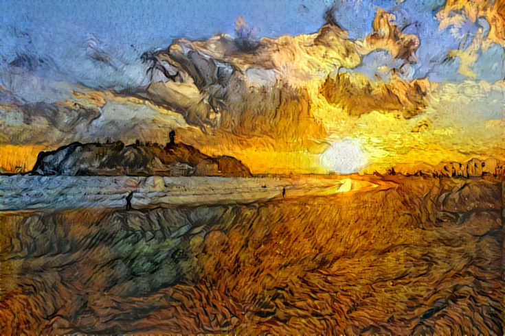
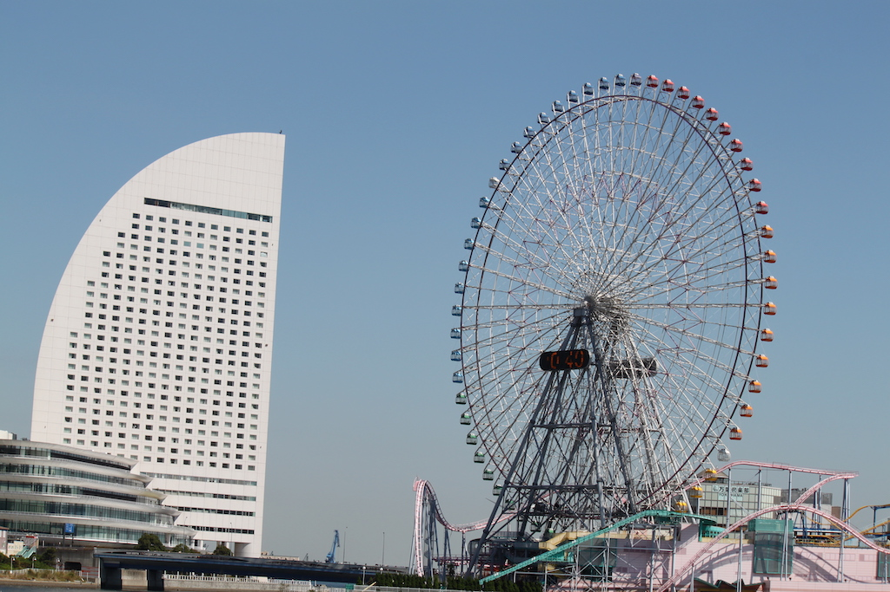
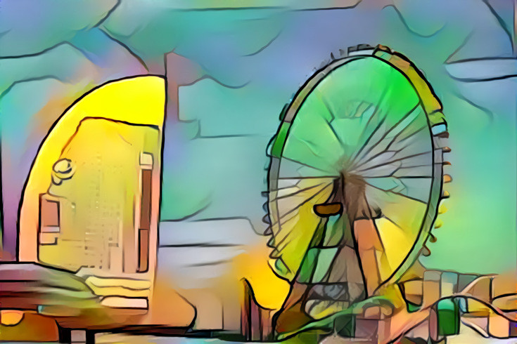
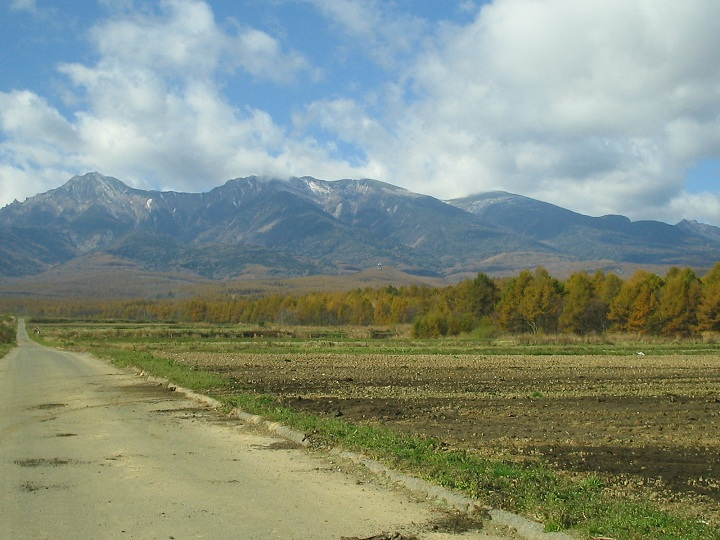
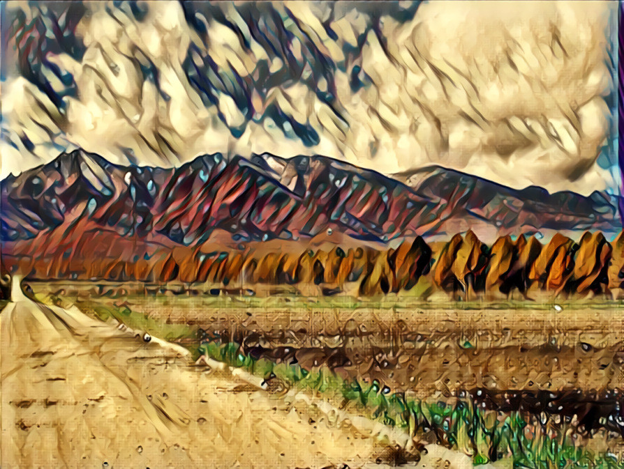
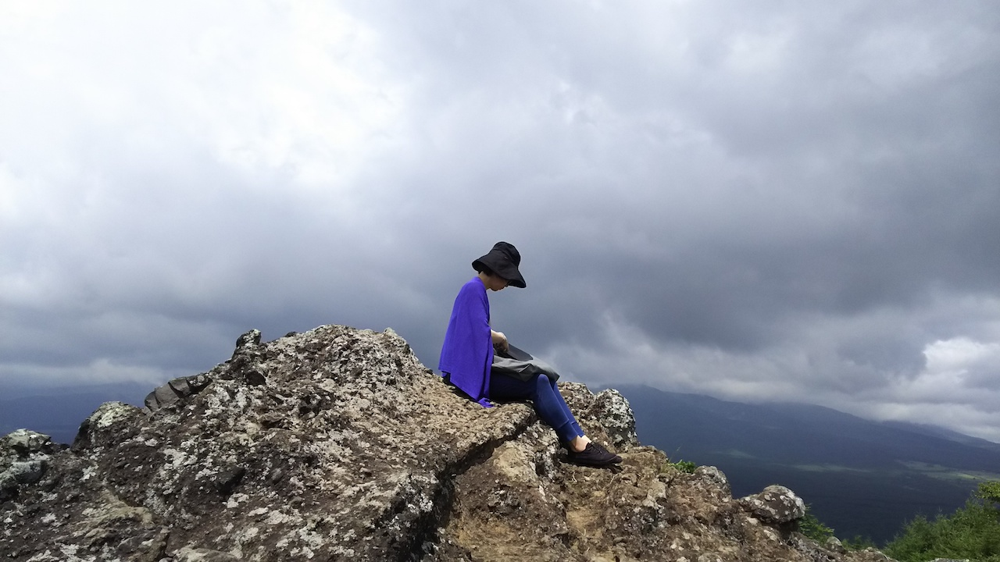
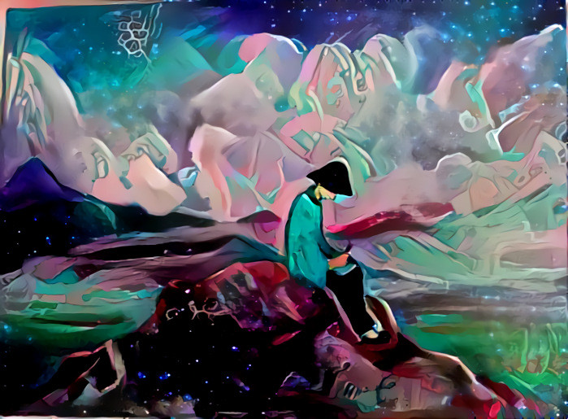
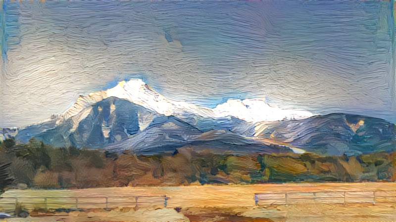
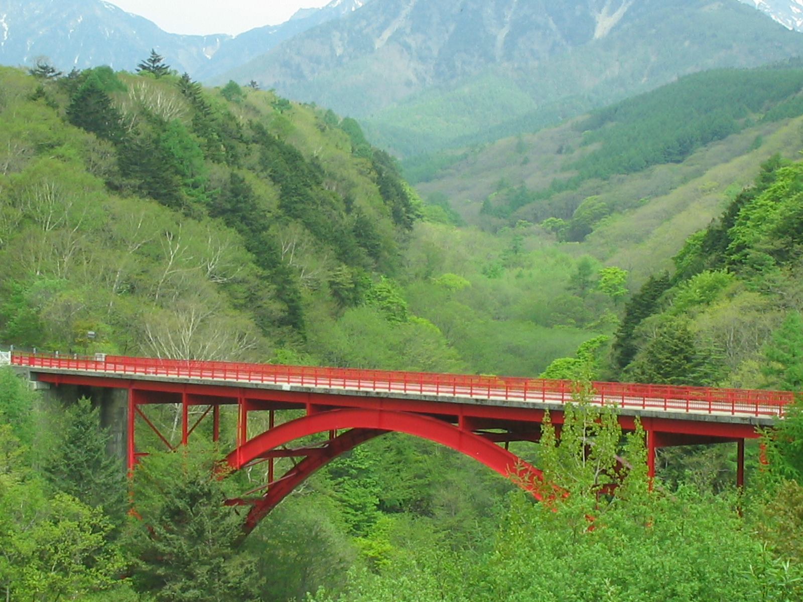
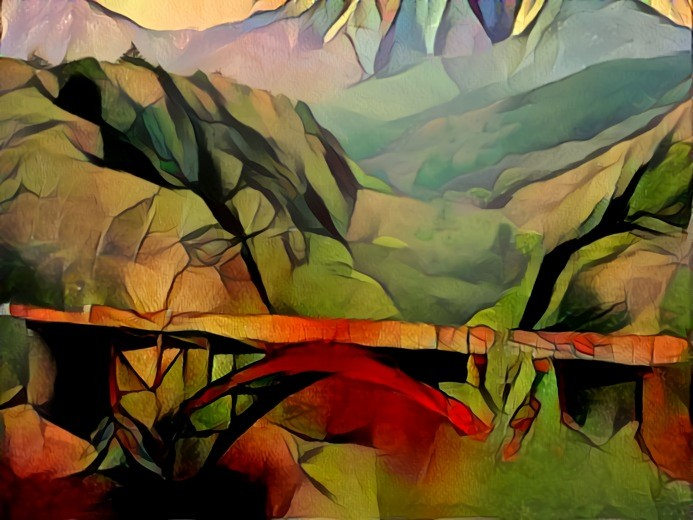

|
このwebsiteは人工知能及びロボティックスを基礎から学習したいと思う人たち向けの学習素材を提供します。初級から中級レベルまでになっています。
Introduction to AI:Deep Learning
|
人工知能関連の領域で最も活用されている言語は、オブジェクト指向言語のPython と C/C++ だと思われます。プログラミング言語の筆頭であるC/C++言語のコーディング及びコンパイルの方法に関する簡単なチュートリアルのページを配置しました。また、インタープリータ言語の代表である Python のインストール方法、および、基本的な文法と使用法を説明します。Jupyter Notebook を使用したソースコードの実行、Matplotlib の使用方法、経済モデルのシミュレーションなどを紹介します。
Web ページ作成に必須のHTMLとCSSの書き方の基本と、JavaScript ファイルの活用方法の初歩を説明します。続いて、webページのデザインに便利なjQuery の説明をします。この時、CodePenを利用します。さらに、マークアップ言語を簡略化したマークダウンによるディジタル文書の作成についても触れます。
近年、C言語やC++に代わる高速で安全性の高いプログラミング言語としてRustの注目が高まっています。RustはMozilla社が支援するオープンソースのプログラミング言語であり、2015年に登場した比較的新しいプログラミング言語です。このRust言語の入門的説明を加えました。
C++ ソースコードのサンプル GitHub Repo
Python ソースコードのサンプル GitHub Repo
最初に、人工知能(AI)の理論的基礎をなすニューラルネットワークの理論、特に、多層パーセプトロン・モデルを初心者向けに説明します。多層パーセプトロンを拡張した畳み込みニューラルネットワーク（CNN）および、ディープニューラルネットワーク（DNN）の有用性を説明します。Deep Learning で必須の偏微分計算における逆伝播法と勾配法についても簡単に説明します。
近年積極的に開発が進む人工知能の Python API (Application Programming Interface)のためのフレームワークの代表例を説明します。C++ APIについては省略します。広範囲な利用が進むフレームワークの代表はPyTorch と TensorFlow だと言われています。PyTorch の使用法、及び、TensorFlow の活用について簡単な説明をします。さらに、OpenCV, Scikit-Learn、および、機械学習の各種ライブラリを紹介します。また、Google Colabの無料GPUサービスの活用法についても簡単に説明します。
Deep Learning で使用される 入門用コードのGitHub Repo
各種のPython APIを用いて、人工知能の骨格である機械学習の基本的モデルとなっている畳み込みニューラルネットワーク（CNN）および、ディープニューラルネットワーク（DNN）を実装します。Deep Learning を実装するために活用される主要な Python API を実装するために、 TensorFlow 、 Pytorch 、Caffe2、Detectron2 などをインストールする方法や基本的な使用方法を説明します。
ニューラルネットワークによる画像の生成モデルは GAN (Generative Adversarial Nets) です。敵対的生成ネットワーク (GAN）の理論的背景について解説します。また、GAN の改良版の DCGAN 、CycleGAN 、 Style Transfer などのモデルを Python で実装して、活用する方法を説明します。さらに、GAN から発生してきた異常検知モデル（Anomaly Detection）の使用方法についても説明します。
TensorFlow、PyTorch による画像分類で使用される Image Classifier の GitHub Repo
Tensorflow、 Pytorchによる物体検出で使用される Object Detection の GitHub Repo
YOLO モデルを学習するための コード の GitHub Repo
Caffe2 & Detectron2 で提案された物体検出コードの GitHub Repo
DCGANS for Pytorch and Tensorflow で使用されるコードの GitHub Repo
CycleGAN for Pytorch and Tensorflow で使用されるコードの GitHub Repo
StyleGANS for Pytorch and Tensorflow で使用されるコードの GitHub Repo
A Neural Algorithm of Artistic Style の Pytorch 実装で使用されるコードの GitHub Repo
A Neural Algorithm of Artistic Style の Tensorflow 実装で使用されるコードの GitHub Repo
Real-Time Style Transfer の Pytorch 実装で使用されるコードの GitHub Repo
Real-Time Style Transfer の Tensorflow 実装で使用されるコードの GitHub Repo
チャットボットによる自動音声応答システムがスマホでも利用できるようになってきました。チャットボット（chatbot）とは人工知能を活用した「自動会話プログラム」のことですが、この理論的背景は自然言語処理を可能にした人工知能の開発に依存します。Deep Learning を用いた自然言語処理に必要な構文解析問題やテキスト分類問題を説明して、それらの解決のために必要なPython ライブラリの実装について説明します。
日本語処理に必須の MeCab の説明から始めます。その後、Gensim や FastText を活用した日本語処理の方法を説明します。一般的なPython API ライブラリとして、GiNZA + SpaCY およびBERT（Pytorch_transformers）を用いたNLP、テキストマイニングや単語推論なども取り上げます。そして、NLTK を用いた言語処理についても説明します。RNN 、 LSTM を用いた時系列データの予測問題も取り上げます。また、会話ロボットのchatbotsの仕組みについても説明して、chatbotsの構築方法を取り上げます。
Mecab + Gensim を用いた日本語処理で使用されるコードの GitHub Repo
Bert_Transformers の日本語処理で使用されるコードの GitHub Repo
RNN および LSTM の Python 実装されたコードの GitHub Repo
シングルボード・コンピュータの代表的な機器は英国ラズベイパイ財団が開発したRaspberry Pi と、半導体メーカーNVIDIAが販売する（Jetson シリーズの） Jetson Nano です。Raspberry Pi はGPUを搭載しないCPUのみのコンピュータですが、Jetson Nano はGPU+CPUを搭載したコンピュータです。Raspberry Pi 及び Jetson Nano をIoT 向けの サーバー として利用した edge computingの構築を試みます。
Raspberry Pi 及び Jetson Nano に Web カメラを装着したライブ映像からの物体推論をリモートPCを介して実行します。また、Raspberry Pi に Google Coral TPU Accelerator や Intel Movidius NCS をUSB 接続して、ライブ映像から物体検出を行います。
Raspberry Pi 及び Jetson Nano を搭載した小型ロボットの操作について説明します。ロボットの操作には、ロボットの操作に特化したミドルウエア、ROS(Robot Operating System)をインストールすることが便利です。ROSはオープンソース・ソフトウエアで、PythonとC++をサポートします。Linux OSのDebian ディストリビューション Ubuntu に ROSをインストールして、その使用方法を説明します。
ROSをインストールしたRaspberry Pi 及び Jetson Nanoを利用します。RT社の Jetson Nano Mouse ロボットにJetson Nano を搭載し、Raspberry Pi をRaspberry Pi Mouse ロボットに搭載します。これらのロボットを実際に使って、PCやスマホからリモートコントロールして、ロボットの操作を実行します。
Raspberry Pi Mouseのdrivers set up のためのコードの GitHub Repo
Raspberry Pi Mouseのセンサーおよびモーターの起動のためのコードの GitHub Repo
Raspberry Pi MouseのRemote web control のためのコードの GitHub Repo
Raspberry Pi Mouseを壁に沿って走らせるコードの GitHub Repo
WebGLとは、Webブラウザ上（ホームページ上）で、三次元のCGをリアルタイムに表示して動かせるオープンソースのグラフィックAPIです。OpenGLから派生したOpenGL ESの3D APIをWebブラウザに移植したものです。WebGLを用いて３DCGを作成することを試みます。JavaScript ライブラリのThree.js を使用して Web に 3D CG を表示してみます。3DCGアニメーションを作成するための統合環境アプリケーションで、オープンソースのフリーウェアのBlender の活用についても説明します。
右側の画像は Google Deep Dream Generator を用いて描画しています。原画は左側にある画像です。関連するページはDCGAN & CycleGAN のPython 実装です。
|
江ノ島に落ちる夕日：腰越海岸から |

AIでゴッホ風に画像編集した江ノ島に落ちる夕日 |
|

コンチネンタルホテルとコスモクロック21 |

AIで画像編集したみなとみらい |
|

野辺山：遠くに八ヶ岳を望む |

AIで画像編集した野辺山 |
|

平沢峠：獅子岩 |

AIで画像編集した獅子岩 |
|
八ヶ岳連峰の赤岳 |

AIで画像編集した八ヶ岳連峰 |
|

八ヶ岳高原ラインの赤い橋：東沢渓谷 |

AIで画像編集した赤い橋 |